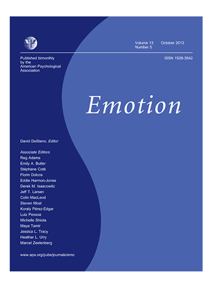
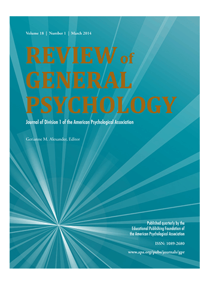

The Contentment Foundation loves asking
questions about human health, wellbeing,
and self-awareness. We thrive on new scientific
innovations, uncovering philosophies that give
us new insights, and synthesizing ancient modern
wisdom to find the best practices for cultivating
unconditional wellbeing in life.
We value evidence-based approaches to cultivating
and understanding contentment, because it makes us
confident that what we’re putting out into the world
actually works. That’s why we partner with the world-renowned
UC Berkeley Social Interaction Lab, which focuses on
understanding human emotions across cultures and individuals.
The BSI lab is the research arm of the Contentment Foundation,
and we support brilliant minds who work to advance our knowledge
and understanding of contentment in the self and others.
As we continue to develop new wellbeing interventions
for schools around the world and refine our Four Pillars
of Wellbeing curriculum, we’re partnering with one of the
top child study labs on the planet – the Yale Center for
Emotional Intelligence. We want to make sure that all of
our wellbeing lessons continue to be world-class and maximally
effective across diverse classrooms.
With our Wellbeing Lab team, we’ve been working
out the beautiful and exciting mystery of contentment
and have made some exciting breakthroughs along the way.
There’s still so much to explore, so here’s a snapshot of
what we’ve discovered so far, and where we’re headed in
the future.
1. Contentment is universally recognized and understood.
This is a big finding, because it likely means that this
is something that all human beings can experience and
cultivate with practice.

Cordaro, D. T., Keltner, D., Tshering, S., Wangchuk,
D., & Flynn, L. M. (2016). The voice conveys
emotion in ten globalized cultures and one remote
village in Bhutan. Emotion, 16 (1), 117.
Keltner, D. & Cordaro, D.T. (2016)
"Understanding Multimodal Emotional
Expressions: Recent Advances in Basic
Emotion Theory", Emotion Researcher,
ISRE's Sourcebook ofr Research on Emotion
and Affect, Andrea Scarantino (ed.)
Keltner, D., Tracy, J., Sauter, D., Cordaro, D.,
McNeil, G. Expression of Emotion. In Barrett, L.F.,
Lewis, M., Haviland-Jones, J.M. (Eds.). Handbook of
Emotions. pp. 467-482. Guilford Press.
Cordaro, D. T., Sun, R., Keltner, D.,
Kamble, S., Huddar, N., McNeil, G.,
Emotion (2017, in press). Universals and
Cultural Variations in 22 Emotional Expressions
Across Cultures. Emotion
2. Most of the major philosophies and spiritual
traditions spanning the 5000 years that we’ve
studied so far talk about contentment as an
important state to cultivate for self-awareness,
the environment, and for developing healthy communities.
Fascinatingly, they rarely talk about happiness.
This is important, because we’re finding that
happiness and contentment are very different from
one another – something that the wise philosophers
from the past already seemed to understand.

Cordaro, D. T., Brackett, M., Glass, L., & Anderson, C. L. (2016).
Contentment: Perceived completeness across cultures and traditions.
Review of General Psychology, 20(3), 221.
3.More recently, we’re finding that contentment
is a really special state that fundamentally
differs from what we know of as happiness.
Our current research is focusing on the
following questions:
● How is contentment different from other pleasant emotions?
● What is a contented person really like?
● How does contentment express in the brain?
● How does contentment impact concepts like materialism, self-awareness, unconditional self-acceptance?
● Can contentment help reduce narcissism and increase compassion?
● What are the best strategies to cultivate contentment in schools?